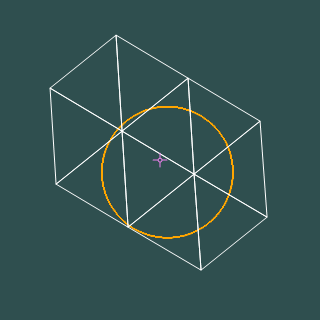

When things are organized in conventional spherical space, their location is expressed in something like latitude and longitude, or right ascension and declination, or azimuth and elevation. Since these are all pretty much equivalent in expressing position, we can limit our discussion to the familiar lat/lon pair. The arguments presented here are equally valid in either frame of reference.
For this primer, let us use a sample database of places in the US. We build a tables from the supplied tab separated text file. The table of Places contains names and locations of cities as well as other census information. After ingesting the data into the tabes, we build a table called 'SpatialIndex' that will be essential for performing the searches that are based on spatial criteria.
Let's create the tables:
create table Place(
HtmID bigint not null primary key, -- spatial index key
PlaceName varchar(100) not null, -- City name
State char(2) not null, -- 2 char state code
Population int not null, -- Number of residents (1993?)
Households int not null, -- Number of homes (1993?)
LandAreaKm int not null, -- Area in sqare KM
WaterAreaKm int not null, -- water area within land area
Lat float not null, -- latitude in decimal degrees
Lon float not null -- longitude decimal degrees
);
You may need to modify the "bulk insert" command
in a way that makes sense at your installation. Here, we assume
that the file is in "C:\geodata\PlaceC.dat".
After populating the table, we direct SQLServer to create
an index.
EXEC('bulk insert Place from C:\geodata\PlaceC.dat;');
create index Place_Name on Place(PlaceName);
go
Now, build the SpatialIndex
create table SpatialIndex (
HtmID bigint not null , -- HTM spatial key (based on lat/lon)
Lat float not null , -- Latitude in Decimal
Lon float not null , -- Longitude in Decimal
x float not null , -- Cartesian coordinates,
y float not null , -- derived from lat-lon
z float not null , --,
Type char(1) not null , -- place (P) or gauge (G)
ObjID bigint not null , -- object ID in table
primary key (HtmID, ObjID) );
go
insert SpatialIndex
select P.HtmID, Lat, Lon, XYZ.x, XYZ.y, XYZ.z,
'P' as [Type], P. HtmID as ObjID
from
dbo.Place P cross apply Spatial.dbo.fHtmLatLonToXyz(P.Lat, P.Lon)XYZ;
DBCC INDEXDEFRAG ( Spatial , Place, 1);
DBCC INDEXDEFRAG ( Spatial , Place, Place_Name);
DBCC INDEXDEFRAG ( Spatial , SpatialIndex, 1);
DBCC SHRINKDATABASE ( Spatial , 1 ); -- 1% spare space
That's the setup. The function fHtmLatLonToXyz is an example of a table valued function that returns a table with a single row of x, y, values. It computes the values to be insert into SpatialIndex that are not available in Place.
Let's start with a query. Find all places that are within 5.5 miles from Baltimore. First, you need to know where Baltimore is and your first query will save the coordinates in variables that are used in the second query, all within the same transaction. For kicks and giggles, let's sort the result by distance in ascending order.
declare @BmID bigint declare @Lat float, @Lon float select @Lat = Lat, @Lon = Lon , @BmID = HtmID from Place where Place.PlaceName = 'Baltimore' and State = 'MD' select ObjID, dbo.fDistanceLatLon(@Lat,@Lon, Lat, Lon) as distance from SpatialIndex where Type = 'P' and ObjID != @BmID and dbo.fDistanceLatLon(@Lat,@Lon, Lat, Lon) < 5.5 -- fine test order by distance asc go
The result is a table of nine entries
ObjID distance -------------------- ---------------------- 14027134015006 4.36933806169942 14027147088778 5.00921492020043 14027134438340 5.02800293806116 14027141421282 5.15631204057331 14027134374429 5.18978361111267
The function fDistanceLatLon computes distance between two locations specified by lat/lon pairs. This is an expensive computation, it would be nice to get the same result but without performing this computation on every place in the database. That's where the coarse filtering of covermaps come to the rescue. We use the covermap to filter out those objects, whose ObjID is not in any of the intervals returned by covermap. If Lat = 39.3008 and Lon = -76.610616 (as defined from the preceding SQL code), then the covermap is:
select * from dbo.fHtmCoverCircleLatLon(39.3008, -76.610616, 5.5) HtmIDStart HtmIDEnd -------------------- -------------------- 14027133550592 14027134599167 14027137744896 14027142987775 14027144036352 14027145084927 14027146133504 14027147182079 14027151376384 14027152424959 14027159764992 14027160813567

There is a bit of an overshoot, causing some false positives to be included in the covermap, but it is still a small number of objects against which to test for distance, when compared with all the objects in the database. The query that uses the covermap, with the top identical bit of the query deliberately omitted is as follows
... select ObjID, dbo.fDistanceLatLon(@Lat,@Lon, Lat, Lon) as distance from SpatialIndex join fHtmCoverCircleLatLon(@Lat, @Lon, 5.5) On HtmID between HtmIDStart and HtmIDEnd -- coarse test where Type = 'P' and @BmID != HtmID -- rule out baltimore and dbo.fDistanceLatLon(@Lat,@Lon, Lat, Lon) < 5.5 -- fine test order by distance asc